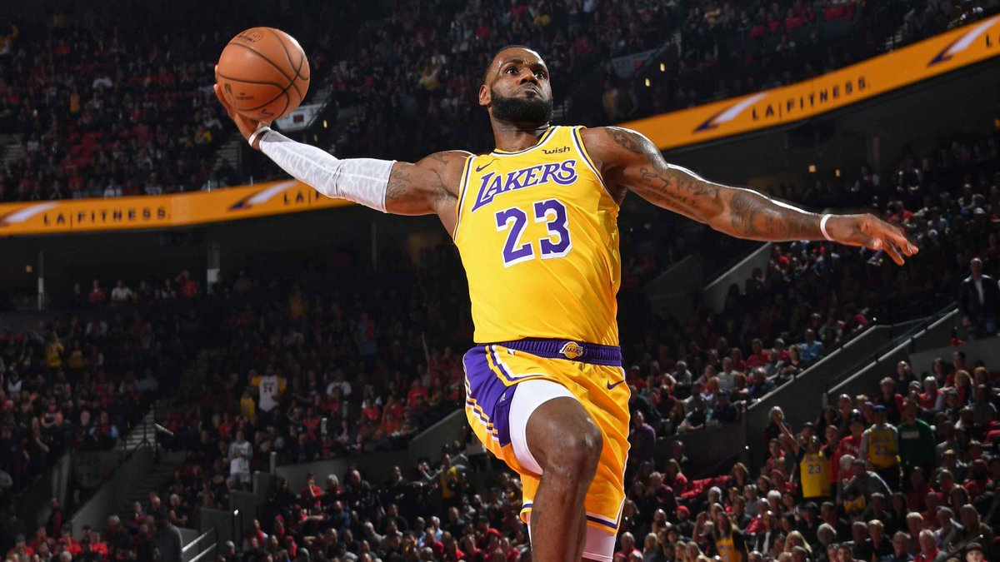

Deporte favorito
El únicio deporte que me gusta y practico, es el Basquetbol

Equipos de Básketbol
-
Los Angeles Lakers

-
Phoenix Suns-Chicago
-
Chicago Bulls

-
Golden State Warriors
Pero el equipo que mas me gusta son Los Lakers
¡Los Lakers de Los Ángeles son simplemente espectaculares! Con una historia legendaria en la NBA, este equipo es la personificación del éxito y la grandeza. Fundados en 1947, los Lakers han acumulado un impresionante palmarés a lo largo de los años.
Campeones de la NBA en 17 ocasiones, están empatados en el palmarés de la NBA, con los Boston Celtics. Poseen el récord de más partidos consecutivos ganados (33) en la historia del deporte profesional estadounidense, llegando a estar imbatidos desde el 5 de noviembre de 1971 hasta el 7 de enero de 1972, fecha en la que perdieron ante Milwaukee Bucks. Los Lakers solo han faltado en los playoffs diez veces en su historia.
24 jugadores miembros del Basketball Hall of Fame han jugado en los Lakers, mientras otros cinco han entrenado al equipo. Cuatro lakers —Kareem Abdul-Jabbar, Magic Johnson, Shaquille O'Neal y Kobe Bryant— han conseguido ganar el MVP de la Temporada de la NBA, para un total de 11 galardones.
Jugadores esteleres de Los Angeles Lakers
Para mi los mejores jugadores que a tenido y tendra son:
-
Magic Johnson

Earvin ‘Magic’ Johnson disputó 13 temporadas en Los Angeles Lakers. Acumuló cinco anillos y 12 All Stars. Es miembro del Hall of Fame. Era el director de orquesta de los Lakers del Show Time: promedió 19,5 puntos, 11,2 asistencias (sus pases en contrataque y sin mirar era una delicia) y 7,2 rebotes. Sus duelos contra los Boston Celtics de Larry Bird elevaron el nivel y el interés de la Liga.
-
Kobe Bryant
Kobe Bean Bryant paso toda su carrera deportiva en los Lakers (20 temporadas). Conquistó cinco anillos de la NBA (dos con Pau Gasol). Fue lo más parecido a Jordan que hubo tras la retirada del gran 23. Acumuló 18 presencias en el All Star y fue incluido en el Hall of Fame. Falleció trágicamente a los 41 años en un accidente de helicóptero.
-
LeBron James
LeBron Raymone James es ya uno de los mejores jugadores en la historia de la NBA. Ha conquistado cuatro anillos, el último en la burbuja de Orlando con unos Lakers con los que suma cinco temporadas con 26,9 puntos, 8,1 rebotes y 8,2 asistencias. Será miembro del Hall of Fame y está a un paso de convertirse en el máximo anotador histórico de la Liga norteamericana.
-
Shaquille ÓNeal
Shaquille Rashaun O'Neal estuvo ocho temporadas en los Lakers haciendo una pareja letal (y algo controvertida) con Kobe Bryant. El resultado, tres anillos con los angelinos (ganó otro con Miami Heat) y siete participaciones en el All Star. Promedió 27 puntos, 11,8 rebotes, 3,1 asistencias y 2,5 tapones por partido. Era un pívot brutal, demoledor en la zona. Imparable y Hall of Fame desde 2016.
-
Kareem Abdul-Jabbar

Kareem Abdul-Jabbar (antes conocido como Ferdinand Lewis Alcindor Jr.) es el máximo anotador en la historia de la NBA: llegó a los 38.387 puntos en 20 temporadas, 14 de ellas en unos Lakers con los que ganó cinco anillos. Pívot de 218 centímetros, siempre será recordado por sus gafas y su lanzamiento, el imparable gancho Sky Hook. Jugó 19 All Stars y es miembro del Hall of Fame.
-
Jerry West
Jerry Alan West es el logo de la NBA. El base de 1,81 fue incluido en el Hall of Fame en 1980 tras llevar a los Lakers… aunque solo conquistó un anillo. Los Boston Celtics de Bill Russell y Red Auerbach impidieron que su leyenda fuera aún más grande. Vistió el púrpura y oro 14 temporadas (en todas ellas fue All Star) para 27 puntos de media.